Ratings of essays, speeches and performances depend on who scored them and what was scored, not only on the person being assessed. A many-facet Rasch model (MFRM) places persons, raters, criteria and tasks on one common scale, so that a person’s measure is adjusted for the raters and criteria they happened to receive.
This page is a guided tour. It does not replace the tutorials; each section ends with a link to the article that explains the method, its assumptions and its references. All data on this page are synthetic teaching data bundled with the package. Tables and figures follow APA style; figures marked interactive show values when you hover over them.
1Why adjust for raters? 2Look at the data 3See the design as a network 4One common scale 5RSM, PCM and GPCM 6Feedback for raters 7Plan with G- and D-studies 8Report in APA style 9mfrmr and other software
This tour uses the development interface for 0.3.0
(0.2.4.9000). The current CRAN release is
0.2.4; use the matching source version to reproduce
these calls, and consult ?mfrmr_api_migration_030 when
updating.
Choose a path; you do not need to read every section:
- First analysis: why adjust, check the data, then read the Wright map.
- Precision and planning: reliability and information, then G-Study / D-Study.
- Rater feedback and reporting: review raters, then prepare a report.
- Coming from regression or SEM: compare the model families.
1. Why adjust for raters?
The example_operational data contain 48 persons. Each
person was scored on three criteria by two of six
raters, so different persons met different raters. Each row is one
observed rating from 1 (lower performance) to
4 (higher performance); missing ratings are absent rows
rather than zeros. Here, Rater and Criterion
are facets—systematic sources of variation alongside
the person being assessed. One line loads the data, and one call fits
the model:
library(mfrmr)
ratings <- load_mfrmr_data("example_operational") # one row per observed rating
head(ratings)
#> Study Person Rater Criterion Score Group
#> 1 OperationalExample P001 R01 Language 4 A
#> 2 OperationalExample P001 R01 Organization 2 A
#> 3 OperationalExample P001 R02 Content 4 A
#> 4 OperationalExample P001 R02 Language 3 A
#> 5 OperationalExample P001 R02 Organization 2 A
#> 6 OperationalExample P002 R01 Content 3 A
fit <- fit_mfrm(
data = ratings,
person = "Person", facets = c("Rater", "Criterion"), score = "Score",
rating_min = 1, rating_max = 4, category_policy = "preserve",
method = "MML", model = "RSM"
)
summary(fit)$decision[, c("Interpretation", "Why")]
#> Interpretation
#> 1 Fit-readiness requirements satisfied; formal precision review required
#> Why
#> 1 Formal precision support has not been evaluated. These checks assess numerical readiness and the requested precision method under the specified model; they do not establish model adequacy or finite-sample coverage for this design.This illustrative fit uses the default fixed standard-normal ability
population and centered non-Person facets and steps. These are model
constraints, not merely display choices. For an analysis that estimates
the population mean and variance, see the workflow tutorial’s explicit
population_formula = ~ 1 specification and its inference
limitations.
Compare each person’s observed average (the plain
mean on the 1–4 score scale) with their measure—their
model-adjusted ability location on the logit (log-odds)
scale, where 0 marks the centered reference of the scale
rather than a pass/fail standard. Persons with the same observed average
can receive different measures because the raters they met differ in
severity.
Show R code that joins raw averages with rater-pair severity
estimates <- as.data.frame(fit)
persons <- subset(estimates, Facet == "Person")
raters <- subset(estimates, Facet == "Rater")
observed <- aggregate(Score ~ Person, data = ratings, FUN = mean)
pairs <- aggregate(Rater ~ Person, data = ratings,
FUN = function(x) paste(sort(unique(x)), collapse = " + "))
severity <- setNames(raters$Estimate, raters$Level)
pair_severity <- aggregate(Rater ~ Person,
data = unique(ratings[c("Person", "Rater")]),
FUN = function(x) mean(severity[x]))
names(pair_severity)[2] <- "PairSeverity"
story <- Reduce(function(a, b) merge(a, b, by = "Person"),
list(observed, pairs, pair_severity,
data.frame(Person = persons$Level, Measure = persons$Estimate)))
names(story)[2:3] <- c("ObservedAverage", "RaterPair")Figure 1
Person Measures by Observed Average and Severity of the Assigned Rater Pair (interactive)
Read across any vertical column of points: the red points (more severe rater pairs) sit higher than the green points (more lenient pairs), because earning the same raw score from severe raters indicates higher underlying performance. Hover over a point to see the person and their raters. The persons whose observed average is exactly 2.00 make the point concrete:
same_average <- subset(story, abs(ObservedAverage - 2) < 1e-8)
same_average <- same_average[order(-same_average$Measure),
c("Person", "RaterPair", "ObservedAverage", "PairSeverity", "Measure")]
same_average_apa <- apa_table(same_average, digits = 2,
caption = "Persons With an Observed Average of 2.00",
note = paste(
"Rater-pair severity is the mean severity of the two assigned raters;",
"higher values mean more severe rating. Measures are EAP person estimates",
"in logits from the MML rating scale model (default N(0, 1) person prior",
"with centered facet and step locations)."))
apa_html(same_average_apa, labels = c("Person", "Rater pair",
"Observed average", "Rater-pair severity", "Measure"))| Person | Rater pair | Observed average | Rater-pair severity | Measure |
|---|---|---|---|---|
| P042 | R05 + R06 | 2.00 | 0.30 | −0.34 |
| P039 | R05 + R06 | 2.00 | 0.30 | −0.36 |
| P017 | R02 + R03 | 2.00 | −0.08 | −0.65 |
| P044 | R01 + R06 | 2.00 | −0.10 | −0.67 |
| P007 | R01 + R02 | 2.00 | −0.49 | −0.96 |
| Note. Rater-pair severity is the mean severity of the two assigned raters; higher values mean more severe rating. Measures are EAP person estimates in logits from the MML rating scale model (default N(0, 1) person prior with centered facet and step locations). |
apa_table() from mfrmr attaches the caption and note to
the table; apa_html(), a short helper shown in Section 8, lays it out for this web
page.
This is the core reason to use a many-facet model: the raw score mixes the person’s performance with the luck of rater assignment. The adjustment relies on the model and on the raters being linked through shared persons, which Section 3 examines.
2. Look at the data before fitting
describe_mfrm_data() summarizes the score distribution,
facet levels, missingness and design connectivity before any model is
fitted. Check that every score category (1–4)
is actually used and that no rater or criterion has unexpectedly few
observations.
description <- describe_mfrm_data(
ratings, person = "Person", facets = c("Rater", "Criterion"),
score = "Score", rating_min = 1, rating_max = 4
)
description$score_distribution
#> # A tibble: 4 × 4
#> Score RawN WeightedN Percent
#> <int> <int> <dbl> <dbl>
#> 1 1 62 62 22.0
#> 2 2 96 96 34.0
#> 3 3 78 78 27.7
#> 4 4 46 46 16.3
description$facet_level_summary
#> # A tibble: 9 × 8
#> Facet Level RawN WeightedN MeanScore SDScore MinScore MaxScore
#> <chr> <chr> <int> <dbl> <dbl> <dbl> <int> <int>
#> 1 Rater R01 47 47 2.77 0.914 1 4
#> 2 Rater R02 56 56 2.62 0.964 1 4
#> 3 Rater R03 50 50 2.3 1.07 1 4
#> 4 Rater R04 47 47 2.30 0.976 1 4
#> 5 Rater R05 44 44 2.16 0.987 1 4
#> 6 Rater R06 38 38 2.03 0.944 1 4
#> 7 Criterion Content 94 94 2.59 0.909 1 4
#> 8 Criterion Language 94 94 2.32 1.04 1 4
#> 9 Criterion Organization 94 94 2.24 1.03 1 4The assignment of persons to raters is easier to see as a picture: each row is a rater, each column a person, and a filled cell means that the rater scored that person.
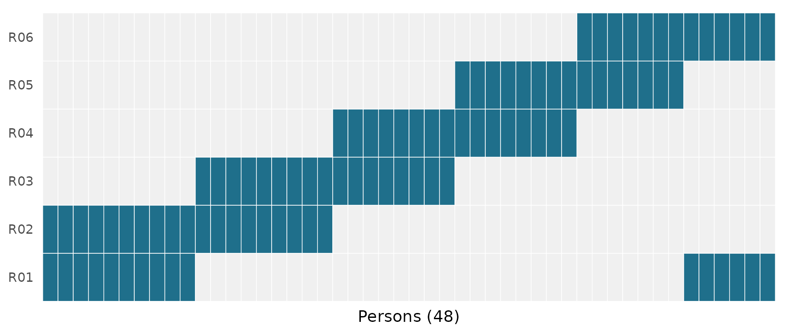
Figure 2
Assignment of Persons to Raters
Show ggplot2 code for the assignment map
library(ggplot2)
assign <- as.data.frame(table(Person = ratings$Person, Rater = ratings$Rater))
assign$Assigned <- assign$Freq > 0
ggplot(assign, aes(Person, Rater, fill = Assigned)) +
geom_tile(colour = "white") +
scale_fill_manual(values = c(`FALSE` = "grey94", `TRUE` = "#1f6f8b"), guide = "none") +
labs(x = "Persons (48)", y = NULL) +
theme_minimal(base_size = 12) +
theme(axis.text.x = element_blank(), panel.grid = element_blank())The staircase pattern shows a linked design: R01 shares persons with R02, R02 with R03, and so on until R06 links back to R01.
More: the workflow tutorial shows how to prepare your own CSV and read the review messages.
3. See the design as a network
Raters can only be compared on a common scale if the design links
them: if two rater teams never share any persons (directly or through a
chain of shared persons), high scores in one team could reflect either
stronger persons or more lenient raters.
rater_network_analysis() summarizes these links as a
network, connecting two raters whenever they scored the same person and
criterion.
rater_net <- rater_network_analysis(fit)
rater_net$edge_metrics[, c("Pair", "Count", "Weight")]
#> Pair Count Weight
#> 1 R04 | R05 23 0.6086957
#> 2 R03 | R04 23 0.4347826
#> 3 R02 | R01 28 0.3571429
#> 4 R01 | R06 18 0.3333333
#> 5 R02 | R03 26 0.3076923
#> 6 R05 | R06 20 0.3000000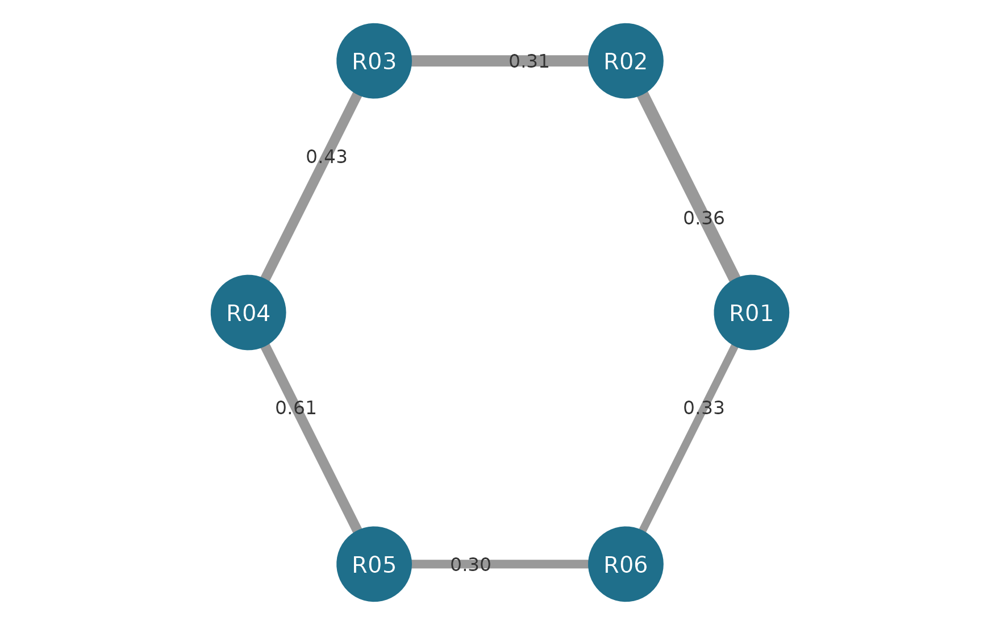
Figure 3
Rater Linking Network
Show igraph plotting code
edges <- rater_net$edge_metrics
graph <- igraph::graph_from_data_frame(edges[, c("From", "To", "Count", "Weight")],
directed = FALSE, vertices = data.frame(name = sort(unique(ratings$Rater))))
op <- par(mar = c(0, 0, 0, 0))
plot(graph, layout = igraph::layout_in_circle(graph),
vertex.size = 30, vertex.color = "#1f6f8b", vertex.frame.color = NA,
vertex.label.color = "white", vertex.label.cex = 1.1,
vertex.label.family = "sans",
edge.width = igraph::E(graph)$Count / 3, edge.color = "grey60",
edge.label = sprintf("%.2f", igraph::E(graph)$Weight),
edge.label.color = "grey20", edge.label.cex = 0.9,
edge.label.family = "sans")
par(op)Edge width (Count) shows the number of shared ratings;
edge labels (Weight) show the proportion of exact
agreement.
A network that looks connected can still hide a gap
Remove the persons who linked R03 with R04 and R06 with R01. The full network still looks connected, because every rater scored every criterion. But the person-by-rater graph now has two separate panels, and severity differences between the panels are confounded with ability differences.
description$design_connectivity
#> Basis Facet PersonNodes FacetLevelNodes Edges Components
#> 1 observed Rater 48 6 96 1
#> 2 observed Criterion 48 3 144 1
#> LargestComponentPersons LargestComponentLevels LargestComponentPercent
#> 1 48 6 100
#> 2 48 3 100
#> Connected
#> 1 TRUE
#> 2 TRUEBoth the Person/Rater graph and the Person/Criterion graph form a single component.
pair_label <- setNames(pairs$Rater, pairs$Person)
broken <- subset(ratings,
!pair_label[Person] %in% c("R03 + R04", "R01 + R06"))
broken_description <- describe_mfrm_data(
broken, person = "Person", facets = c("Rater", "Criterion"),
score = "Score", rating_min = 1, rating_max = 4
)
broken_description$design_connectivity
#> Basis Facet PersonNodes FacetLevelNodes Edges Components
#> 1 observed Rater 34 6 68 2
#> 2 observed Criterion 34 3 102 1
#> LargestComponentPersons LargestComponentLevels LargestComponentPercent
#> 1 19 3 55.88235
#> 2 34 3 100.00000
#> Connected
#> 1 FALSE
#> 2 TRUEThe Person/Rater graph now has two components. Fitting still runs, but mfrmr tells you why the result needs review:
broken_fit <- fit_mfrm(
broken, person = "Person", facets = c("Rater", "Criterion"), score = "Score",
rating_min = 1, rating_max = 4, category_policy = "preserve",
method = "MML", model = "RSM"
)
#> Warning: The MML fixed-effect design is full rank, but the corresponding
#> free-Person JML design is rank deficient. Cross-panel identification therefore
#> relies on the common latent-population assumption; review assignment and
#> population invariance before reporting facet contrasts.
#> Warning: Category support is retained but requires review: at least one fitted
#> or local scope contains an empty or singleton category/transition cell. The fit
#> may be inspected, but category-information strength has not been certified;
#> inspect `fit$data_review$category_support` before inference.
summary(broken_fit)$decision[, c("Interpretation", "Why")]
#> Interpretation
#> 1 Review before reporting or inference
#> Why
#> 1 Identification depends on the population model; One or more categories provide weak information. These checks assess numerical readiness and the requested precision method under the specified model; they do not establish model adequacy or finite-sample coverage for this design.Under MML the two panels are tied together only by the assumption that persons in both panels come from the same population. The package does not hide that dependence.
4. One common scale: the Wright map
After fitting, plot(fit) draws a Wright map that places
persons, raters, criteria and rating-scale thresholds on the same
vertical logit axis:
plot(fit)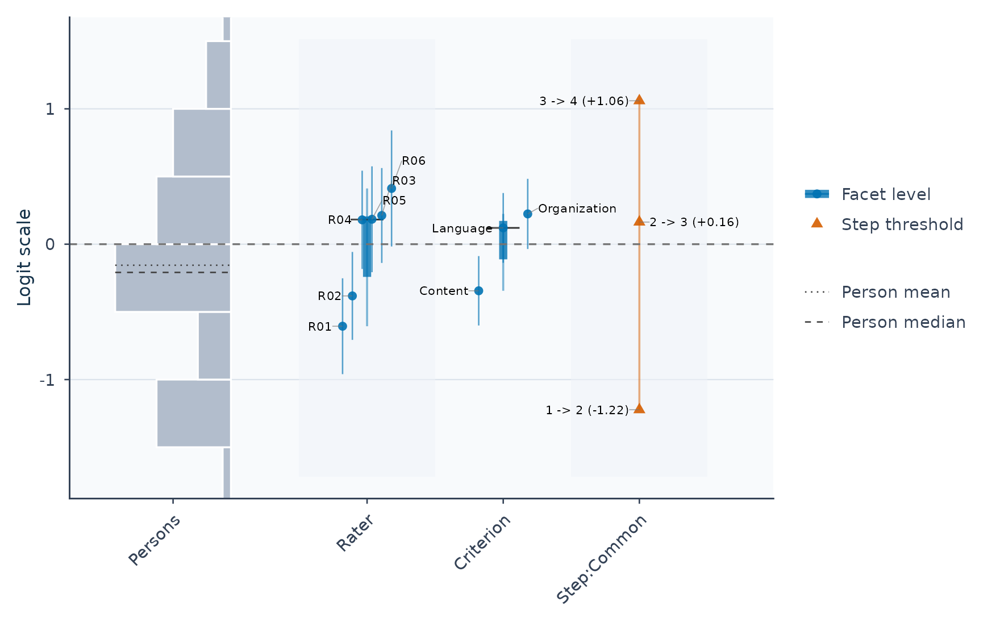
Figure 4
Wright Map of Persons, Raters, Criteria
and Thresholds
Read the map by comparing heights across columns (0 is
the centered scale reference, not a passing score):
- Persons (left): higher locations mean higher estimated ability.
-
Raters and Criteria (middle): higher rater
locations (such as
R06near the top vs.R01near the bottom) mean more severe scoring—lower expected scores for the same person and criterion. Higher criterion locations mean more difficult criteria. -
Thresholds (right): the logit locations where
adjacent score categories (
1vs.2,2vs.3,3vs.4) are equally likely.
Rater severity with its uncertainty is available as a table (see Section 8) and as a plot:
rater_intervals <- mfrm_facet_intervals(fit, facet = "Rater")
plot(rater_intervals)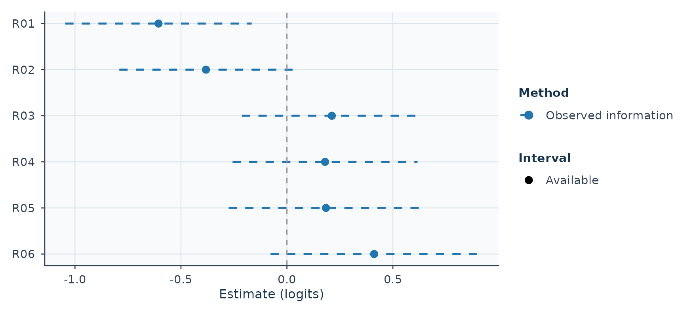
Figure 5
Rater Severity Estimates With 95%
Intervals
Read rater_intervals$table$Status and
$InferenceReview before reporting an interval. A finite
estimate can remain when uncertainty is unavailable; missing bounds do
not mean zero uncertainty. Numerical eligibility does not guarantee
small-sample coverage. The Wright map and this interval helper can use
different uncertainty calculations; use the saved interval object for
the interval table and plot reported together below.
More: visual diagnostics and facet intervals.
Reliability and information answer different questions
Can this analysis distinguish the people or facet levels? Separation reliability summarizes estimated between-level variation relative to its measurement error. It is a sample summary, not an ability-specific curve.
diagnostics <- diagnose_mfrm(fit)
plot(fit, type = "reliability", diagnostics = diagnostics, draw = FALSE) +
ggplot2::labs(x = "Separation reliability")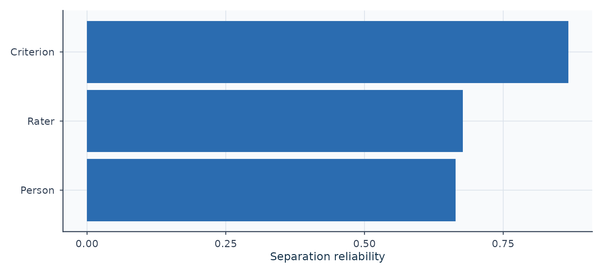
Figure 6
Separation Reliability by Facet
- High Person separation indicates distinguishable ability estimates.
- High Rater separation indicates distinguishable severities; it does not mean that raters agree. Low separation can also reflect imprecision.
- These approximate indices depend on the estimator and SE basis. In MML, EAP shrinkage and posterior SD affect the Person summary; it is not automatically Cronbach’s alpha or a G coefficient.
The FACETS manual distinguishes separation from inter-rater agreement. Use the agreement summaries in Section 6 for the latter and G/Phi in Section 7 for rating-plan decisions. No universal pass/fail line applies to every facet.
Where on the ability scale do these rating conditions provide information? An information curve answers this conditional question while holding the fitted calibration parameters fixed.
info <- compute_information(fit)
plot(info, type = "tif", draw = FALSE) +
ggplot2::labs(y = "Observed-design information")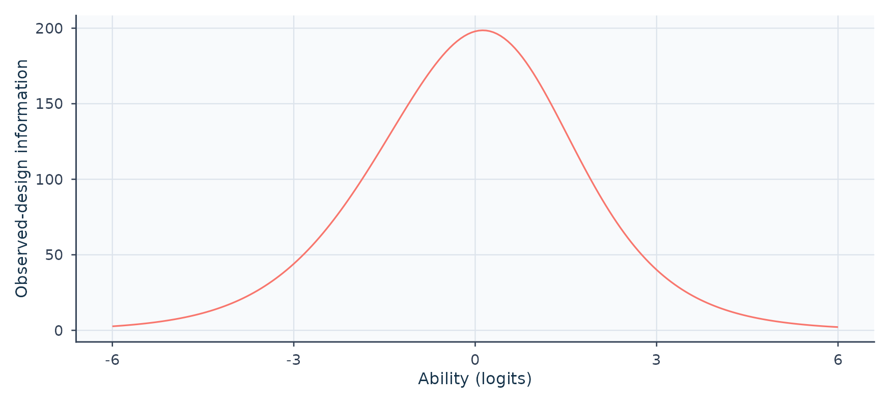
Figure 7
Information Across Ability, Summed Over
Observed Rating Exposures
Read the horizontal location and shape; keep the exposure
basis in view. Here compute_information() sums
across all observed rating exposures. Duplicating those
exposures with calibration fixed doubles the curve; it does not improve
any one person’s rating plan. Its reciprocal-square-root curve
(type = "sem") is therefore not an individual person’s EAP
posterior SD. Calibration uncertainty and residual dependence are not
propagated.
MFRM can have a test information function once a particular
task/criterion/ rater roster is specified. FACETS
explains why it does not supply a unique default test information
curve. For conditionally independent ratings on a declared roster,
information adds over those ratings. RSM/PCM use the conditional score
variance per rating; GPCM additionally multiplies by squared
discrimination on this logit scale (Muraki, 1993). See
?compute_information for the weighting definition and model
scope.
5. RSM, PCM and GPCM: what changes?
The three models share the same idea, but differ in which parts of the rating scale are allowed to differ across criteria.
| Model | Category thresholds | Discrimination (slope) | Use it when |
|---|---|---|---|
| Rating scale model (RSM) | One set shared by all criteria | Equal for all | The rubric works the same way for every criterion |
| Partial credit model (PCM) | A separate set for each criterion | Equal for all | Categories are used differently across criteria |
| Generalized partial credit model (GPCM) | A separate set for each criterion | Estimated for each criterion | Criteria also differ in how sharply they separate persons |
For one criterion with difficulty , step thresholds and slope , the probability of score category is proportional to (with rater severity entering alongside ). Visually, crossing points between adjacent curves mark the thresholds () where two neighbouring scores are equally likely: RSM shares spacing () and fixes ; PCM allows criterion-specific spacing while keeping ; GPCM also estimates each criterion’s steepness .
Try it
Switch among RSM, PCM and GPCM to see which sliders unlock for Criterion B, and hover (or tap) over either chart to compare category probabilities at the same person measure . These curves illustrate the model formula rather than data estimates. The example has four categories and symmetric centered steps ; PCM and GPCM do not generally require that symmetry. In GPCM mode the two relative slopes have geometric mean one, as in the package’s one-family identification: changing A’s slope sets B’s to its reciprocal. Neither slope is an index of rater quality.
Figure 8
Category Probability Curves Under RSM, PCM and GPCM (interactive illustration)
Fitted curves from the three models
The same data can be fitted under all three models. Here every fit
estimates the mean and SD of a normal ability population, so the
population assumptions are held constant for the comparison. This
differs from the default fixed N(0,1) RSM example above.
category_curves_report() returns conditional reference
curves with additive facet locations set to zero; it does not average
predictions over the observed rater assignments.
core <- load_mfrmr_data("example_core") # 48 persons x 4 raters x 4 criteria
fit_model <- function(model) {
fit_mfrm(core, person = "Person", facets = c("Rater", "Criterion"),
score = "Score", rating_min = 1, rating_max = 4,
category_policy = "preserve", method = "MML", model = model,
step_facet = if (model == "RSM") NULL else "Criterion",
slope_facet = if (model == "GPCM") "Criterion" else NULL,
population_formula = ~ 1, person_data = unique(core["Person"]))
}
fits <- lapply(c(RSM = "RSM", PCM = "PCM", GPCM = "GPCM"), fit_model)
curve_reports <- lapply(fits, category_curves_report, theta_range = c(-4, 4))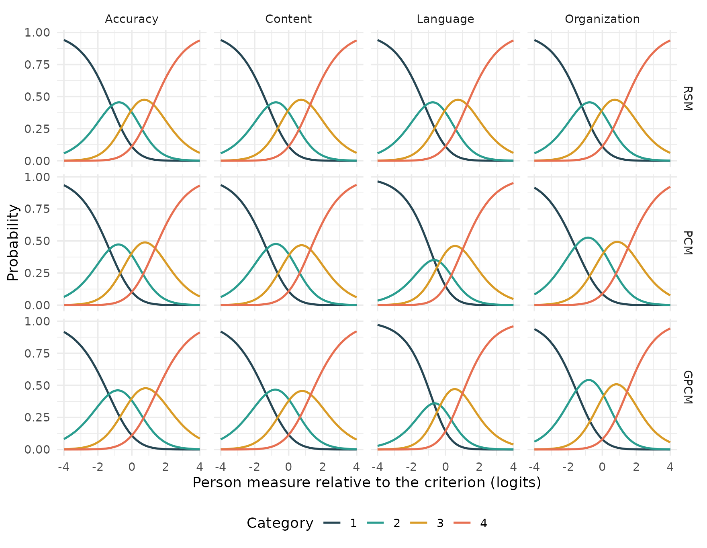
Figure 9
Fitted Category Probability Curves by
Model and Criterion
Show ggplot2 code for the fitted curves
criteria <- sort(unique(core$Criterion))
curves <- do.call(rbind, lapply(names(fits), function(m) {
p <- curve_reports[[m]]$probabilities
p$Model <- m
if (m == "RSM") { # one shared curve set, drawn once per criterion
p <- do.call(rbind, lapply(criteria, function(k) transform(p, CurveGroup = k)))
}
p
}))
curves$Model <- factor(curves$Model, levels = c("RSM", "PCM", "GPCM"))
ggplot(curves, aes(Theta, Probability, colour = factor(Category))) +
geom_line(linewidth = 0.8) +
facet_grid(Model ~ CurveGroup) +
scale_colour_manual(values = c("#264653", "#2a9d8f", "#d99b26", "#e76f51"),
name = "Category") +
labs(x = "Person measure relative to the criterion (logits)", y = "Probability") +
theme_minimal(base_size = 12) +
theme(legend.position = "bottom")On this reference axis, RSM shares the same curves across criteria. This does not mean that the fitted criterion difficulties are equal: their location shifts are omitted from these reference profiles. PCM allows different step patterns; GPCM also allows different relative slopes. Read their fitted values alongside the plots:
Which model fits these data better?
build_model_choice_review() checks whether the fitted
candidates support an information-criterion comparison. Read its
eligibility and warnings before ranking the models; a finite log
likelihood alone is insufficient.
choice <- build_model_choice_review(fits$RSM, fits$PCM, fits$GPCM,
labels = c("RSM", "PCM", "GPCM"))
choice$overview[, c("Models", "ICComparable", "ReviewStatus")]
#> # A tibble: 1 × 3
#> Models ICComparable ReviewStatus
#> <chr> <lgl> <chr>
#> 1 RSM, PCM, GPCM TRUE reference_plus_sensitivity_review
choice$comparison_table[, c("Label", "ICEligible", "InferenceReady")]
#> # A tibble: 3 × 3
#> Label ICEligible InferenceReady
#> <chr> <lgl> <lgl>
#> 1 RSM TRUE FALSE
#> 2 PCM TRUE FALSE
#> 3 GPCM TRUE FALSE
choice$comparison_warnings
#> character(0)ICEligible and InferenceReady answer
different questions. An eligible information-criterion comparison does
not qualify every parameter interval. The full reasons remain in
choice$comparison_table$InferenceReview and in each fit’s
summary(fit)$decision.
criteria_table <- as.data.frame(choice$comparison_table[,
c("Label", "Npar", "LogLik", "AIC", "Delta_AIC", "BIC", "Delta_BIC")])
choice_apa <- apa_table(criteria_table, digits = 2,
caption = "Information Criteria for the Three Candidate Models",
note = paste(
"All models use the same ratings and an estimated normal ability population.",
"k = number of estimated parameters; LL = log-likelihood;",
"Δ = difference from the smallest value in the candidate set.",
"Smaller AIC and BIC values indicate a better balance of fit and complexity."))
apa_html(choice_apa, integers = "Npar",
labels = c("Model", "k", "LL", "AIC", "ΔAIC", "BIC", "ΔBIC"))| Model | k | LL | AIC | ΔAIC | BIC | ΔBIC |
|---|---|---|---|---|---|---|
| RSM | 10 | −899.99 | 1819.98 | 1.51 | 1838.69 | 0.00 |
| PCM | 16 | −893.23 | 1818.47 | 0.00 | 1848.40 | 9.72 |
| GPCM | 19 | −892.61 | 1823.22 | 4.75 | 1858.77 | 20.08 |
| Note. All models use the same ratings and an estimated normal ability population. k = number of estimated parameters; LL = log-likelihood; Δ = difference from the smallest value in the candidate set. Smaller AIC and BIC values indicate a better balance of fit and complexity. |
Compare AIC and BIC only when the review permits it. They weigh fit against complexity differently, and neither is the probability that a model is correct. When eligibility fails, retain the review reason instead of selecting the smallest displayed number. Curve plots remain descriptions of the fitted models, not evidence that their uncertainty or comparison is qualified.
More: model and estimator choice and GPCM scope.
6. Feedback for raters
A fitted model gives each rater evidence they can act on. The tabs
below use the example_bias data, in which one
rater-by-criterion interaction was planted: rater R04 scores Accuracy
lower than the main-effects model implies.
bias_ratings <- load_mfrmr_data("example_bias")
bias_fit <- fit_mfrm(bias_ratings, person = "Person",
facets = c("Rater", "Criterion"), score = "Score",
rating_min = 1, rating_max = 4, category_policy = "preserve",
method = "MML", model = "RSM")
bias_diagnostics <- diagnose_mfrm(bias_fit)Rater feedback
plot(mfrm_facet_intervals(bias_fit, facet = "Rater"))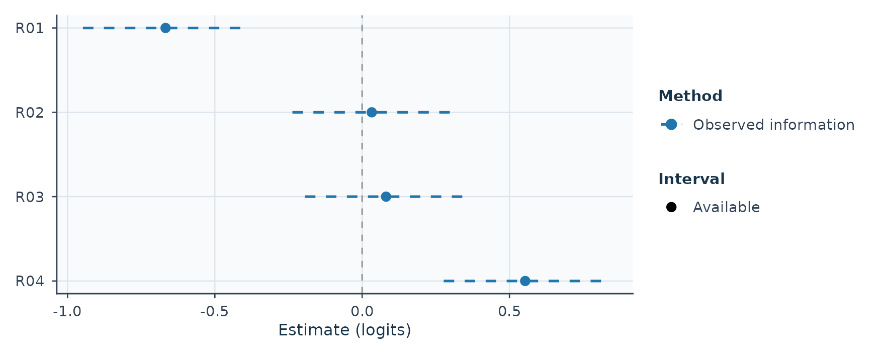
Figure 10
Severity Estimates for the Four
Raters
Higher values mean more severe rating (lower
expected scores for the same person and criterion); 0 is
the centered rater average rather than an ideal target.
centrality <- rater_centrality_table(bias_fit)
centrality_apa <- apa_table(
centrality$table[, c("Rater", "RatingRows", "ObservedSD", "Infit", "Outfit")],
digits = 2,
caption = "Spread and Fit of Each Rater's Scores",
note = paste(
"n = number of ratings. A small observed SD can indicate central tendency.",
"MnSq = mean square; values near 1 indicate ratings about as variable as",
"the model expects. No pass/fail cutoff is applied."))
apa_html(centrality_apa, integers = "RatingRows",
labels = c("Rater", "n", "Observed SD", "Infit MnSq", "Outfit MnSq"))| Rater | n | Observed SD | Infit MnSq | Outfit MnSq |
|---|---|---|---|---|
| R01 | 96 | 0.80 | 0.86 | 0.83 |
| R02 | 96 | 0.99 | 1.06 | 1.04 |
| R03 | 96 | 0.90 | 0.66 | 0.65 |
| R04 | 96 | 1.05 | 0.75 | 0.75 |
| Note. n = number of ratings. A small observed SD can indicate central tendency. MnSq = mean square; values near 1 indicate ratings about as variable as the model expects. No pass/fail cutoff is applied. |
Infit MnSq and Outfit MnSq compare observed
rating variation against what the model expects (1.00):
values well above 1.00 point to noisy or unpredictable
ratings, whereas values well below 1.00—especially
alongside a small Observed SD—can reflect muted or
central-tendency scoring.
bias <- estimate_bias(bias_fit, bias_diagnostics,
facet_a = "Rater", facet_b = "Criterion")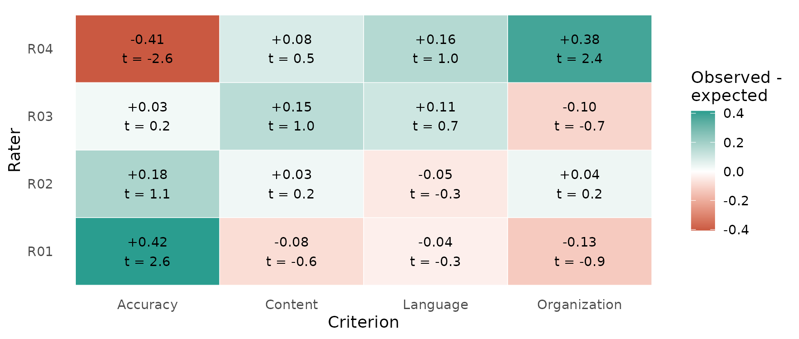
Figure 11
Rater-by-Criterion Differences Between
Observed and Expected Average Scores
Show ggplot2 code for the bias heat map
cells <- as.data.frame(bias$table)
cells$Difference <- cells$`Obs-Exp Average`
ggplot(cells, aes(FacetB_Level, FacetA_Level, fill = Difference)) +
geom_tile(colour = "white") +
geom_text(aes(label = sprintf("%+.2f\nt = %.1f", Difference, t)), size = 3.4) +
scale_fill_gradient2(low = "#c8553d", mid = "white", high = "#2a9d8f",
name = "Observed -\nexpected") +
labs(x = "Criterion", y = "Rater") +
theme_minimal(base_size = 12) +
theme(panel.grid = element_blank())Green cells mean the rater gave higher (more lenient) scores than the model expects for that criterion; red cells mean lower (more severe) scores, matching the colours in Section 1. The planted R04 x Accuracy interaction is the most negative cell, a pattern that R04’s overall severity estimate would average away.
The other cells with large |t| (R01 x Accuracy, R04 x Organization) were not planted. Each cell is measured against the rater’s and criterion’s overall estimates, which already absorbed part of the R04 x Accuracy effect, so neighbouring cells move in the opposite direction. Treat the table as a screen that tells you where to look, not as a list of confirmed biases.
More: rating agreement.
7. From estimation to decisions: G-study and D-study
An MFRM fit answers “where is each person, rater and criterion on the logit scale?” A generalizability study (G-study) answers a planning question on the observed score scale: “how much of the variation in observed scores around each person’s universe score comes from persons, raters, tasks and their interactions?” A decision study (D-study) then projects how dependable observed scores would be under future plans with different numbers of raters and tasks.
The bundled mfrmr_example_gtheory_crossed data contain
two observed score components (Content and Organization; raw scores
rather than MFRM logits) for 40 persons, each scored by the same 8
raters on 6 tasks.
data("mfrmr_example_gtheory_crossed", package = "mfrmr")
g <- mfrm_g_study(mfrmr_example_gtheory_crossed,
scores = c("Content", "Organization"),
person = "Person", rater = "Rater", task = "Task")
plot(g, score = c("Content", "Organization"), ncol = 2)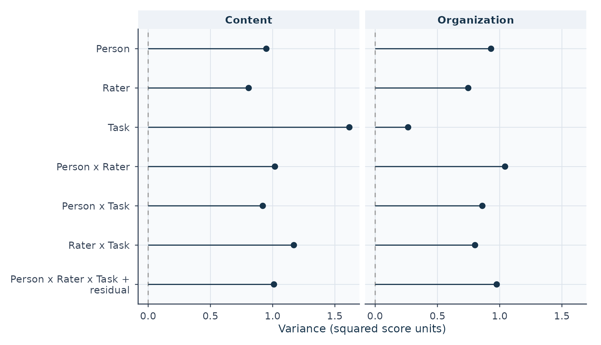
Figure 12
Estimated Variance Components for
Content and Organization
The D-study below evaluates every combination of one to four raters and one to eight tasks for the equally weighted composite of the two scores.
weights <- c(Content = 0.5, Organization = 0.5)
d_grid <- mfrm_d_study(g, expand.grid(Raters = 1:4, Tasks = 1:8),
weights = weights)
d_intervals <- summary(d_grid, intervals = TRUE, parm = c("G", "Phi"),
assumption = "normal")$table
# Static version of the figures below:
# plot(d_grid, metric = "G", x_var = "Tasks", panel_by = "Raters",
# intervals = TRUE, assumption = "normal")Choose the scenario that matches your decision (G tracks
dependability for relative rank ordering, while
Phi tracks dependability for absolute cut-score
decisions). Each tab reuses the same G-study. In the
interactive figures, hover over a point to read its value and interval,
and click a legend entry to hide or show a rater count. Finite points
remain visible when an interval is unavailable. In that case the hover
text says so and the ribbon has a gap; inspect d_intervals
for the availability state and explanation.
Decision scenarios
Question. We will select the top applicants, so only the ordering of persons matters. How many raters and tasks do we need?
Figure 13
Projected G Coefficient by Number of Raters and Tasks (interactive)
G rises with tasks along each line and with raters across lines. Look for the smallest feasible plan whose G is high enough, and check how low its interval reaches before relying on it.
Question. Each person passes or fails against a fixed standard, so the absolute score level matters. Rater-wide and task-wide shifts now count as error.
Figure 14
Projected Phi Coefficient by Number of Raters and Tasks (interactive)
Phi is lower than G for every plan, because absolute decisions are also hurt by differences in overall rater severity and task difficulty.
Question. We can afford twelve ratings per person. Is it better to use two raters with six tasks, three raters with four tasks, or four raters with three tasks?
plans <- data.frame(Raters = c(2, 3, 4), Tasks = c(6, 4, 3))
d_plans <- mfrm_d_study(g, design_grid = plans, weights = weights)
plot(d_plans, type = "error_components")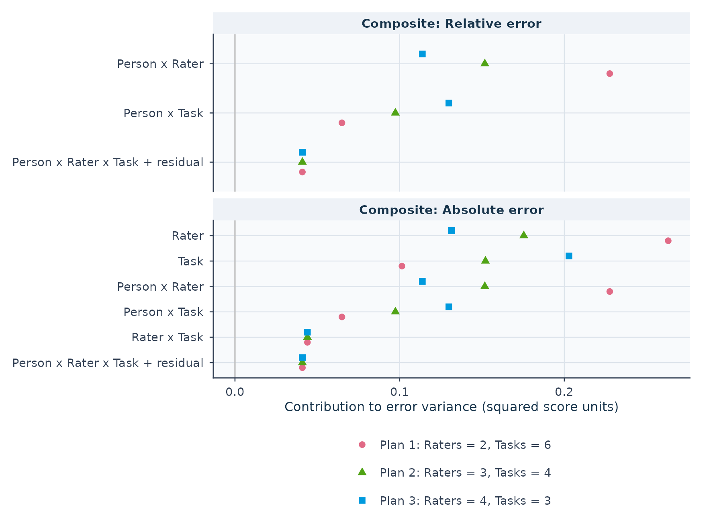
Figure 15
Error-Variance Contributions for Three
Plans With Twelve Ratings per Person
comparison <- mfrm_multivariate_d_compare(d_plans, reference = 1,
assumption = "normal")
changes <- subset(comparison$comparisons, Metric %in% c("G", "Phi"))
plan_label <- sprintf("%d raters × %d tasks", plans$Raters, plans$Tasks)
changes <- data.frame(
Plan = plan_label[changes$Scenario],
Coefficient = changes$Metric,
Reference = apa_coef(changes$ReferenceValue),
Plan_value = apa_coef(changes$Value),
Change = apa_coef(changes$Difference),
CI = sprintf("[%s, %s]", apa_coef(changes$Lower), apa_coef(changes$Upper))
)
changes_apa <- apa_table(changes,
caption = "Change in G and Phi Relative to 2 Raters × 6 Tasks",
note = paste(
"Change = plan value minus reference value. CI = approximate 95% paired",
"delta-method interval assuming normal random effects; an interval",
"containing zero leaves the direction of change uncertain."))
apa_html(changes_apa,
labels = c("Plan", "Coefficient", "Reference value", "Plan value",
"Change", "95% CI"))| Plan | Coefficient | Reference value | Plan value | Change | 95% CI |
|---|---|---|---|---|---|
| 3 raters × 4 tasks | G | .561 | .595 | .034 | [.022, .046] |
| 3 raters × 4 tasks | Phi | .365 | .392 | .027 | [−.014, .067] |
| 4 raters × 3 tasks | G | .561 | .599 | .039 | [.018, .059] |
| 4 raters × 3 tasks | Phi | .365 | .391 | .026 | [−.046, .099] |
| Note. Change = plan value minus reference value. CI = approximate 95% paired delta-method interval assuming normal random effects; an interval containing zero leaves the direction of change uncertain. |
Each extra rater shrinks person-by-rater error, while dropping tasks enlarges person-by-task error. Both alternatives improve G over two raters with six tasks, while the intervals for the change in Phi include zero.
Question. Every task is scored by its own team of three raters (raters are nested within tasks). How many tasks are needed?
data("mfrmr_example_gtheory_nested", package = "mfrmr")
g_nested <- mfrm_g_study(mfrmr_example_gtheory_nested,
c("Content", "Organization"), nesting = c(Rater = "Task"))
d_nested <- mfrm_d_study(g_nested,
data.frame(Raters = 3, Tasks = c(2, 3, 4, 6, 8, 12)), weights = weights)
plot(d_nested, metric = "G", x_var = "Tasks", intervals = TRUE,
assumption = "normal")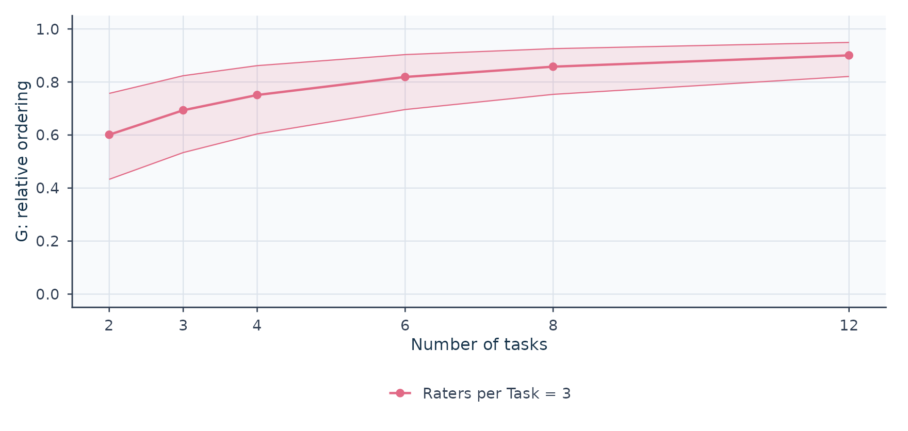
Figure 16
Projected G Coefficient for a Nested
Design With Three Raters per Task
Here Raters = 3 means three raters per
task: twelve tasks use 36 different raters.
G and Phi describe the dependability of scores; neither is the probability of a correct pass/fail decision. Intervals are approximate and pointwise, and selecting a winner after looking at many plans is not protected by them.
8. Report in APA style
mfrmr drafts reporting text and APA table material from the same
fitted objects. build_apa_outputs() returns Method and
Results text that states the model, estimation method, sample and the
checks behind each claim.
apa <- build_apa_outputs(fit, diagnostics = diagnostics,
context = list(
assessment = "synthetic writing assessment",
setting = "teaching example",
scale_desc = "1-4 rating scale",
rater_facet = "Rater"
))Method.
Design and data. The analysis focused on synthetic writing assessment in teaching example. A many-facet rating-scale Rasch model was fit to 282 observations from 48 persons scored on a 4-category scale (1-4). The design included facets for Rater (n = 6), Criterion (n = 3). The smallest non-person facet-level count was 38 retained rating rows, placing it in the package’s ‘standard’ screening band. These counts are not counts of independent examinees or effective sample sizes and do not establish precision or interval coverage. Review targeting, connectedness and estimator-specific uncertainty alongside
facet_small_sample_review(). The rating scale was described as 1-4 rating scale.Estimation settings. The RSM specification was estimated using MML with mfrmr. Model-based precision summaries were available for this run. Person measures are expected a posteriori (EAP) estimates under the marginal person distribution, and residual-based fit statistics are evaluated at these EAP measures rather than at joint maximum likelihood (JMLE) estimates. Recommended use for this precision profile: Uncertainty is conditional on the fitted model. Person posterior SDs condition on the fitted calibration; facet standard errors use observed information. Review interval assumptions before reporting.. Optimization met the numerical convergence checks after 28 function evaluations and 28 gradient evaluations (LogLik = -347.240, canonical MML AIC = 712.480, Person-BIC = 729.320, Sclove SABIC = 701.085). MML integration used fixed Gauss-Hermite quadrature (q=31). Terminal gradient sup-norm = 0.0000 (review threshold = 0.0001). Constraint settings: noncenter facet = Person; anchored levels = 0 (facets: none); group anchors = 0 (facets: none); dummy facets = none. Centered facets sum to zero across all levels, including anchors and group totals.
Results.
Scale functioning. Category counts were available for all 4 categories: 0 unused and 0 below 10. Counts alone do not establish category adequacy. Adjacent threshold comparisons: 0 decreasing among 2 available; 0 of 2 comparisons unavailable. Available estimates range from -1.22 to 1.06 logits. Adjacent threshold comparisons: 0 decreasing among 2 available; 0 of 2 comparisons unavailable.
Facet measures. Person measures ranged from -1.72 to 1.51 logits (M = -0.16, SD = 0.82). Rater measures ranged from -0.61 to 0.41 logits (M = -0.00, SD = 0.40). Criterion measures ranged from -0.34 to 0.22 logits (M = 0.00, SD = 0.30).
Fit and precision. Overall mean-square fit was within the 0.5-1.5 screening band (infit MnSq = 0.87, outfit MnSq = 0.86). This band is the package’s review convention; published mean-square guidelines differ, and band position is screening evidence rather than a model-validity decision. MnSq outside [0.5, 1.5]: 18 of 57 classified elements flagged; 0 of 57 elements unclassified. Largest misfit signals among 57 elements with complete paired statistics: Person:P022 (|ZSTD| = 2.88); Person:P026 (|ZSTD| = 2.84); Criterion:Content (|ZSTD| = 2.27). Criterion reliability = 0.87 (separation = 2.56). Person reliability = 0.66 (separation = 1.41). Rater reliability = 0.68 (separation = 1.45). Separation reliability describes differences among facet locations relative to their estimation errors. High Person values indicate distinguishable abilities; high rater values indicate distinguishable severities, not inter-rater agreement. Low rater values can also reflect imprecision and do not establish agreement. The index does not test every rater pair or quantify the practical size of severity differences. Reliability, separation and Strata are approximate compatibility indices using marginal SEs; joint-information SEs do not validate this variance decomposition. They do not account for covariance among estimates. EAP-based separation is not posterior-variance EAP reliability. Model and fit-adjusted values are companion indices, not confidence limits. Strata describes hypothetical distinguishable strata, not discovered groups. Facet heterogeneity chi-square summaries use diagonal SE weights, not full-covariance joint tests. The Person row uses EAP measures with posterior SDs, which yields a conservative summary that is not numerically comparable to JMLE-based person reliability from FACETS. Inter-rater agreement for Rater is reported separately from separation reliability. Diagnostics match scores within Person and all remaining non-rater facets; each compared pair contributes one opportunity per matched context. The denominator is 138 matched-context opportunities across rater pairs, not a count of independent people. 6 of 15 candidate rater pairs have matched scores. Observed exact agreement = 0.39; observed adjacent agreement (absolute score difference at most 1, including exact matches) = 0.86; model-expected exact agreement = 0.35. The model-expected baseline uses fitted category probabilities with calibration fixed; it is not chance agreement or an inferential test. It assumes conditional independence at the saved Person point score (EAP for MML), rather than integrating over the Person posterior. These descriptive summaries do not classify rater quality or establish fairness. Element-level 95% approximate intervals (Normal approximation) accompany 57 of 57 estimates; 57 of 57 estimates have intervals eligible for primary reporting.
Residual structure. Overall categories: 0 flagged among 4 classified; 0 of 4 unavailable. Step/scale groups: 0 flagged among 1 classified; 0 of 1 unavailable. Facet levels: 1 flagged among 9 classified; 0 of 9 unavailable. Level pairs: 1 flagged among 9 classified; 0 of 9 unavailable. Expected counts condition on the same responses through Person posteriors, with fitted calibration held fixed. Residual scales omit cross-response covariance and calibration-parameter uncertainty; thresholds are descriptive, not calibrated tests. Strict marginal screening gives an overall RMSD of 0.01, overall max |standardized residual| = 0.43. The largest strict marginal cell involved Criterion: Content | Cat 4 (standardized residual = -1.53, proportion difference = -0.06). Strict pairwise local-dependence follow-up flagged 1 level pair(s) under the latent-integrated agreement screen. The largest strict pairwise signal involved Rater: R04 vs R05 (exact-agreement standardized residual = 2.09, adjacent-agreement standardized residual = 0.22).
Reporting cautions. Fit-basis note: MnSq/ZSTD fit statistics in this run were computed at EAP person measures, which are shrunken toward the population mean; they are therefore not numerically interchangeable with JMLE-based engines such as FACETS. Refit with method = “JML” when a JMLE-style residual basis is required for external comparison.
Treat this draft wording as a starting point to adapt to your study question, sampling plan and rubric—not as a finished manuscript.
The rater severity intervals from Section 4 and the facet separation
summaries from diagnostics pass straight to
apa_table():
rater_apa <- apa_table(rater_intervals, digits = 2,
caption = "Rater Severity Estimates and 95% Pointwise Intervals",
note = paste(
"Estimates and SEs are in logits on the centered Rater facet",
"(higher values indicate more severe rating).",
"Intervals use observed-information normal approximations."))
apa_html(rater_apa,
columns = c("Target", "Estimate", "SE", "Lower", "Upper", "Status"),
labels = c("Rater", "Severity", "SE", "95% LL", "95% UL", "Status"))| Rater | Severity | SE | 95% LL | 95% UL | Status |
|---|---|---|---|---|---|
| R01 | −0.61 | 0.22 | −1.05 | −0.17 | available |
| R02 | −0.38 | 0.21 | −0.79 | 0.03 | available |
| R03 | 0.21 | 0.22 | −0.21 | 0.64 | available |
| R04 | 0.18 | 0.22 | −0.26 | 0.62 | available |
| R05 | 0.18 | 0.23 | −0.27 | 0.64 | available |
| R06 | 0.41 | 0.25 | −0.08 | 0.90 | available |
| Note. Estimates and SEs are in logits on the centered Rater facet (higher values indicate more severe rating). Intervals use observed-information normal approximations. |
reliability_apa <- apa_table(fit, which = "reliability",
diagnostics = diagnostics, digits = 2)
apa_html(reliability_apa,
columns = c("Facet", "Levels", "Separation", "Strata", "Reliability"),
integers = "Levels", bounded = "Reliability")| Facet | Levels | Separation | Strata | Reliability |
|---|---|---|---|---|
| Criterion | 3 | 2.56 | 3.74 | .87 |
| Person | 48 | 1.41 | 2.21 | .66 |
| Rater | 6 | 1.45 | 2.27 | .68 |
| Note. Separation and reliability are based on observed variance, measurement error, and adjusted true variance. Overall fit: infit MnSq = 0.87, outfit MnSq = 0.86. Rater facet (Rater) reliability = 0.68, separation = 1.45. Inter-rater agreement for Rater is reported separately from separation reliability. Diagnostics match scores within Person and all remaining non-rater facets; each compared pair contributes one opportunity per matched context. The denominator is 138 matched-context opportunities across rater pairs, not a count of independent people. 6 of 15 candidate rater pairs have matched scores. Observed exact agreement = 0.39; observed adjacent agreement (absolute score difference at most 1, including exact matches) = 0.86; model-expected exact agreement = 0.35. The model-expected baseline uses fitted category probabilities with calibration fixed; it is not chance agreement or an inferential test. It assumes conditional independence at the saved Person point score (EAP for MML), rather than integrating over the Person posterior. These descriptive summaries do not classify rater quality or establish fairness. |
Show the apa_html() helper used to render tables on this
page
# Tables and figures are numbered in the order they appear on the page.
new_counter <- function() {
n <- 0L
function() {
n <<- n + 1L
n
}
}
next_table <- new_counter()
next_figure <- new_counter()
# Lay out an mfrmr apa_table() result as an APA-style HTML table:
# number in bold, title in italics, horizontal rules only, note below.
apa_html <- function(x, columns = NULL, labels = NULL, digits = 2,
integers = NULL, bounded = NULL) {
tab <- as.data.frame(x$table)
if (!is.null(columns)) tab <- tab[, columns, drop = FALSE]
numeric <- vapply(tab, is.numeric, logical(1))
# Fixed decimals (2.00, not 2), whole numbers for counts, no leading zero
# for statistics that cannot exceed 1, and a true minus sign.
for (j in names(tab)[numeric]) {
whole <- is.integer(tab[[j]]) || j %in% integers
value <- formatC(tab[[j]], digits = if (whole) 0 else digits, format = "f")
if (j %in% bounded) value <- sub("^(-?)0\\.", "\\1.", value)
tab[[j]] <- sub("^-", "−", value)
}
if (!is.null(labels)) names(tab) <- labels
title <- sub("^Table [0-9]+\\s*\\n", "", x$caption)
out <- kableExtra::kbl(tab, format = "html",
row.names = FALSE, align = ifelse(numeric, "r", "l"), escape = FALSE,
table.attr = 'class="apa-table" style=""',
caption = sprintf("<strong>Table %d</strong><br><em>%s</em>",
next_table(), title))
if (length(x$note) && nzchar(x$note)) {
out <- kableExtra::footnote(out, general = x$note,
general_title = "Note.", footnote_as_chunk = TRUE)
}
out
}
# APA figure heading: number in bold, title in italics, placed above the figure.
apa_figure <- function(title) {
sprintf("<strong>Figure %d</strong><br><em>%s</em>", next_figure(), title)
}
apa_widget <- function(widget, title) {
htmltools::tagList(
htmltools::HTML(sprintf('<p class="apa-figure-title">%s</p>', apa_figure(title))),
widget
)
}
# APA number format for statistics bounded by 1: no leading zero.
apa_coef <- function(x, digits = 3) {
out <- formatC(x, digits = digits, format = "f")
out <- sub("^(-?)0\\.", "\\1.", out)
sub("^-", "−", out)
}More: reporting
and APA output and ?apa_table.
Save the results and reopen them
Save the fitted objects and their interpretation records together. The code below uses a temporary file for the example; choose a permanent path for your own analysis. Reopening the file does not refit the models.
tour_results <- list(
package_version = as.character(packageVersion("mfrmr")),
session = sessionInfo(), ratings = ratings, fit = fit,
diagnostics = diagnostics, rater_intervals = rater_intervals,
information = info, curve_reports = curve_reports,
model_review = choice, g_study = g, d_study = d_grid,
d_intervals = d_intervals
)
result_file <- tempfile(fileext = ".rds")
saveRDS(tour_results, result_file)
restored <- readRDS(result_file)
summary(restored$fit)$decision
#> Interpretation
#> 1 Fit-readiness requirements satisfied; formal precision review required
#> FormalInference FitReadiness
#> 1 No ready
#> Why
#> 1 Formal precision support has not been evaluated. These checks assess numerical readiness and the requested precision method under the specified model; they do not establish model adequacy or finite-sample coverage for this design.
#> NextAction
#> 1 Run `diagnose_mfrm()` and pass its result as `diagnostics =` to evaluate formal precision support; fit readiness alone is not a formal-inference decision.
summary(restored$rater_intervals)
#> Target Estimate SE Lower Upper ModelSE ModelLower
#> 1 R01 -0.6059776 0.2243521 -1.04569977 -0.16625550 0.2243521 -1.04569977
#> 2 R02 -0.3820356 0.2085513 -0.79078871 0.02671748 0.2085513 -0.79078871
#> 3 R03 0.2120388 0.2165999 -0.21248930 0.63656689 0.2165999 -0.21248930
#> 4 R04 0.1799462 0.2226570 -0.25645356 0.61634590 0.2226570 -0.25645356
#> 5 R05 0.1842365 0.2341852 -0.27475809 0.64323116 0.2341852 -0.27475809
#> 6 R06 0.4117917 0.2494894 -0.07719839 0.90078189 0.2494894 -0.07719839
#> ModelUpper Status CIEligible
#> 1 -0.16625550 available TRUE
#> 2 0.02671748 available TRUE
#> 3 0.63656689 available TRUE
#> 4 0.61634590 available TRUE
#> 5 0.64323116 available TRUE
#> 6 0.90078189 available TRUE
#> InferenceReview
#> 1 Pointwise normal approximation under the selected covariance method; numerical availability does not guarantee coverage.
#> 2 Pointwise normal approximation under the selected covariance method; numerical availability does not guarantee coverage.
#> 3 Pointwise normal approximation under the selected covariance method; numerical availability does not guarantee coverage.
#> 4 Pointwise normal approximation under the selected covariance method; numerical availability does not guarantee coverage.
#> 5 Pointwise normal approximation under the selected covariance method; numerical availability does not guarantee coverage.
#> 6 Pointwise normal approximation under the selected covariance method; numerical availability does not guarantee coverage.
# Reuse the saved numbers and availability states in the interactive plan plot:
# dstudy_plotly(restored$d_intervals, "G", "G (relative ordering)")The interval table, its plot and the saved object refer to the same
selected calculation. Keep Status,
InferenceReview and the model-review warnings with exported
numbers. A screenshot alone does not preserve those records.
9. mfrmr and other software
How does MFRM relate to ordinal regression and SEM?
All three can connect an unobserved person ability to ordered ratings, but they need not assign the same probabilities to those ratings. Unidimensional means one person-ability dimension: it does not limit the number of rater, task or other facet effects.
| Starting point | What the model relates to ability | A typical use |
|---|---|---|
| RSM / PCM MFRM | Odds of one category versus its neighbour, such as 2 versus 1 | Estimate ability, rater severity and task difficulty on a common measurement scale |
ordinal::clmm(link = "logit") |
Odds of scoring at or below a cutpoint versus above it, such as 0 or 1 versus 2 | Explain ratings with predictors and account for repeated ratings through random effects |
Ordinal CFA in lavaan |
Thresholds on a continuous, normally distributed latent response; this gives cumulative probit probabilities | Examine a measurement structure and its relationships with other latent variables |
These uses overlap. The response equation, facet structure and inferential goal should guide the choice; a package name alone does not define the model.
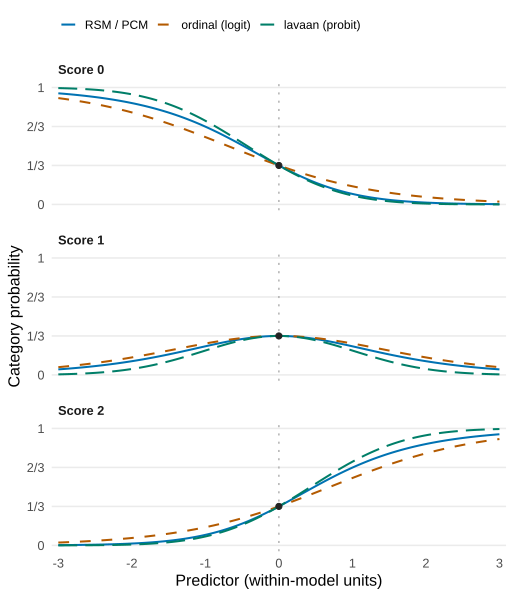
Show R code to reproduce this figure
Copy the complete code below into R. It requires ggplot2
and svglite, calculates the probabilities directly, checks
the defining equations and saves model-families.svg in your
working directory. No fitted objects or external data are required. This
is also the code used to generate the figure shown above.
library(ggplot2)
eta <- seq(-3, 3, length.out = 301L)
adjacent <- exp(outer(eta, 0:2) - pmax(0, 2 * eta))
adjacent <- adjacent / rowSums(adjacent)
cumulative <- function(cdf, cuts) {
lower <- cdf(cuts[1L] - eta)
upper <- cdf(cuts[2L] - eta)
cbind(lower, upper - lower, 1 - upper)
}
logit <- cumulative(plogis, qlogis(c(1 / 3, 2 / 3)))
probit <- cumulative(pnorm, qnorm(c(1 / 3, 2 / 3)))
probabilities <- list(
"RSM / PCM: adjacent logit" = adjacent,
"Ordinal mixed model: cumulative logit" = logit,
"Ordinal CFA: cumulative probit" = probit
)
# Verify the displayed probabilities and the defining link equations.
center <- which.min(abs(eta))
for (p in probabilities) {
stopifnot(all(is.finite(p)), all(p >= 0), all(p <= 1),
max(abs(rowSums(p) - 1)) < 1e-14,
max(abs(p[center, ] - 1 / 3)) < 1e-14,
all(diff(drop(p %*% (0:2))) > 0))
}
stopifnot(
max(abs(log(adjacent[, 2] / adjacent[, 1]) - eta)) < 1e-13,
max(abs(log(adjacent[, 3] / adjacent[, 2]) - eta)) < 1e-13,
max(abs(qlogis(logit[, 1]) - (qlogis(1 / 3) - eta))) < 1e-12,
max(abs(qlogis(rowSums(logit[, 1:2])) - (qlogis(2 / 3) - eta))) < 1e-12,
max(abs(qnorm(probit[, 1]) - (qnorm(1 / 3) - eta))) < 1e-12,
max(abs(qnorm(rowSums(probit[, 1:2])) - (qnorm(2 / 3) - eta))) < 1e-12
)
curves <- do.call(rbind, lapply(names(probabilities), function(model) {
data.frame(Predictor = rep(eta, 3L),
Probability = as.vector(probabilities[[model]]),
Category = factor(rep(0:2, each = length(eta)),
labels = paste("Score", 0:2)), Model = model)
}))
curves$Model <- factor(curves$Model, levels = names(probabilities))
figure <- ggplot(curves, aes(Predictor, Probability,
colour = Model, linetype = Model)) +
geom_vline(xintercept = 0, colour = "grey70", linetype = "dotted") +
geom_line(linewidth = 0.95) +
geom_point(data = curves[curves$Predictor == 0 & curves$Model == names(probabilities)[1L], ],
colour = "#222222", size = 2.4, show.legend = FALSE) +
facet_wrap(~Category, ncol = 1) +
scale_colour_manual(values = c("#0072B2", "#B35A00", "#007E68"),
labels = c("RSM / PCM", "ordinal (logit)", "lavaan (probit)")) +
scale_linetype_manual(values = c("solid", "dashed", "longdash"),
labels = c("RSM / PCM", "ordinal (logit)", "lavaan (probit)")) +
scale_x_continuous(breaks = -3:3, expand = expansion(mult = 0.015)) +
scale_y_continuous(limits = c(0, 1), breaks = c(0, 1 / 3, 2 / 3, 1),
labels = c("0", "1/3", "2/3", "1")) +
labs(x = "Predictor (within-model units)", y = "Category probability") +
theme_minimal(base_size = 16, base_family = "sans") +
theme(legend.position = "top", legend.justification = "left",
legend.text = element_text(size = 12),
legend.title = element_blank(),
strip.text = element_text(face = "bold", hjust = 0),
panel.grid.minor = element_blank(),
panel.grid.major.x = element_blank(),
panel.spacing = grid::unit(1.2, "lines"),
plot.margin = margin(8, 12, 8, 8))
# Save in the working directory, then display the same figure.
ggsave("model-families.svg", figure, device = svglite::svglite,
width = 7.2, height = 8.3, bg = "white")
figureFor a binary response, adjacent and cumulative
logistic formulations can describe the same model after aligning signs,
constraints and random-effect distributions. With three or more
categories, RSM/PCM and a cumulative logit model generally
define different response families. Changing the link from logit to
probit also changes the response function and its scale. The FACETS model
equation, clmm
documentation and lavaan categorical-data
tutorial describe the respective formulations and estimation
options.
Equations, scale choices and why estimates need not agree
For person \(p\), rater \(r\) and task \(t\), write \(\eta=\theta_p-\rho_r-\delta_t\), where larger \(\rho_r\) means greater rater severity. The adjacent-category equation is
\[\log\frac{P(Y=k)}{P(Y=k-1)}=\eta-\tau_{g,k}.\]
RSM shares the step ladder; PCM permits group-specific ladders. The RSM/PCM curves use one ladder with both steps zero, so its category weights are \(1,e^\eta,e^{2\eta}\). Adjacent steps need not be ordered for the resulting probabilities to be valid; they are not cumulative cutpoints.
A cumulative model instead specifies
\[P(Y\leq k\mid\eta)=F(\alpha_k-\eta),\]
with ordered cutpoints \(\alpha_k\).
The ordinal curves use logistic \(F\) and \(\alpha=(\operatorname{logit}(1/3),\operatorname{logit}(2/3))\);
the lavaan curves use standard-normal \(F\) and \(\alpha=(\Phi^{-1}(1/3),\Phi^{-1}(2/3))\).
Category probabilities are differences of successive cumulative
probabilities. Matching the centre does not equate the latent
scales.
In ordinal CFA, a common formulation is \(Y_j^*=\nu_j+\lambda_j\theta+\epsilon_j\) with normally distributed residuals and thresholds on \(Y_j^*\). The illustration fixes the loading and residual SD to one and the intercept to zero. In general, the probit slope is \(\lambda_j/\operatorname{SD}(\epsilon_j)\) under the chosen factor scale; a reported factor loading is not automatically a logistic discrimination. Kamata and Bauer (2008) explain the factor-analysis/IRT connection and the required scaling.
Three further choices matter when comparing fitted results:
- Fixed or random facets: estimating each rater severity as a fixed parameter and treating raters as a sample from a distribution answer different questions and imply different pooling. One person dimension does not preclude additional random effects.
- Estimation: JML estimates person parameters
jointly; MML integrates over a person distribution. Standard
lavaananalyses withorderedoutcomes use WLSMV by default, based on a DWLS fit, rather than the same full response-pattern likelihood. Corresponding response equations do not ensure identical estimates or SEs. - Person scores: EAP posterior means and the
conditional modes returned by
ordinal::ranef()are different summaries. Their uncertainty also depends on how calibration-parameter uncertainty is treated.
Van den Noortgate, De Boeck and Meulders (2003) show how Rasch models connect to logistic mixed models. That connection does not make a polytomous PCM a cumulative-link model. The figure-generation script runs the same R code shown above; no data are fitted.
Other many-facet measurement workflows
FACETS, ACER ConQuest and the R package TAM are established tools for many-facet and Rasch-family measurement. Each fits a distinct workflow:
| mfrmr | FACETS | ConQuest | TAM | |
|---|---|---|---|---|
| Environment | R package, any platform | Windows program | Standalone program | R package, any platform |
| License | Open source (MIT) | Commercial; free evaluation version | Commercial; trial available | Open source (GPL) |
| Estimation | MML, CML and JML (with a bias-corrected GPCM JML option); Stan/brms export | JMLE (PMLE for some models) | MML, JML and Bayesian MCMC | MML and JML |
| Dimensions | Unidimensional measurement models; multivariate observed-score G/D studies | Unidimensional | Unidimensional and multidimensional | Unidimensional and multidimensional |
| Rating models | RSM, PCM, GPCM | Rasch rating-scale and partial-credit families | Wide family incl. multifaceted models | Rasch, 2PL, RSM, PCM, GPCM, facets |
How mfrmr connects to existing workflows:
- Existing FACETS results can be read with
read_facets_results()and inspected withplot()andsummary()without refitting; supported fits fromTAM,mirtandeRmcan be imported viaimport_irt_fit()(including CML fits fromeRm, not only MML fits), and supported models can be exported to Stan orbrmswithexport_mfrm_model(). - FACETS has decades of operational use. mfrmr reproduces many FACETS
tables and visual summaries as structured R objects, while making its
own statistical scope and remaining gaps explicit through
facets_guide("coverage"):
coverage <- facets_guide("coverage")
table(coverage$Status)
#>
#> implemented not_implemented not_targeted
#> 18 9 3
#> partial supported_with_caveat
#> 19 7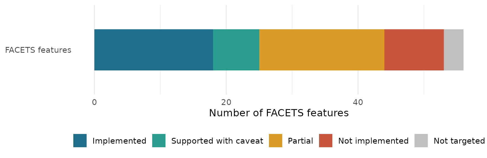
Figure 17
Coverage of FACETS Features in
mfrmr
Show ggplot2 code for the FACETS coverage bar
status_levels <- c("implemented", "supported_with_caveat", "partial",
"not_implemented", "not_targeted")
status_labels <- c("Implemented", "Supported with caveat", "Partial",
"Not implemented", "Not targeted")
coverage$Status <- factor(coverage$Status,
levels = status_levels, labels = status_labels)
ggplot(coverage, aes(y = "FACETS features", fill = Status)) +
geom_bar(position = position_stack(reverse = TRUE), width = 0.55) +
scale_fill_manual(
values = c("#1f6f8b", "#2a9d8f", "#d99b26", "#c8553d", "grey75"),
drop = FALSE) +
labs(x = "Number of FACETS features", y = NULL, fill = NULL) +
theme_minimal(base_size = 12) +
theme(legend.position = "bottom", panel.grid.major.y = element_blank())Software sources: FACETS and its online manual, ACER ConQuest, and TAM on CRAN.
More: migrating from FACETS.
Where to go next
| I want to… | Read |
|---|---|
| Run my first analysis on my own CSV | Workflow tutorial |
| Choose a model and estimator | Model and estimator choice |
| Give feedback to raters | Rating agreement |
| Plan the number of raters and tasks | G theory planning |
| Report results | Reporting and APA output |
| Move from FACETS | FACETS migration |